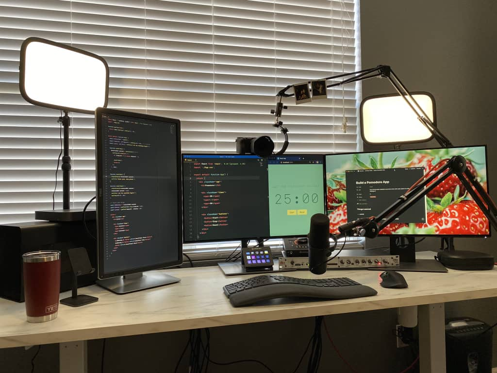

About Me
I am Full Stack Developer with over 10 years of combined experience working across, academic, administrative, public service and technology fields. I have 5 years experience developing consumer-focused web sites using WordPress, HTML, CSS, JavaScript (React/Redux and Node/Express), and Python, translating creative solutions into code and working across different APIs and third-party integrations and databases.
Having worked in various industries, I've developed strong creative problem-solving, communication, and organizational skills, working in synergy with remote and non remote teams to accomplish organizational goals with minimal supervision. I intend to utilize these skills, in combination with modern web technologies learnt at Lambda School to build engaging and cutting-edge products to benefit humanity.
When I'm not coding, I volunteer to a few community programs teaching music and sciences to young lads in my community. I love playing the guitar and Piano as well as I believe music and programming are similar in a lot of ways. Want to take me up on that? I am just a click away!